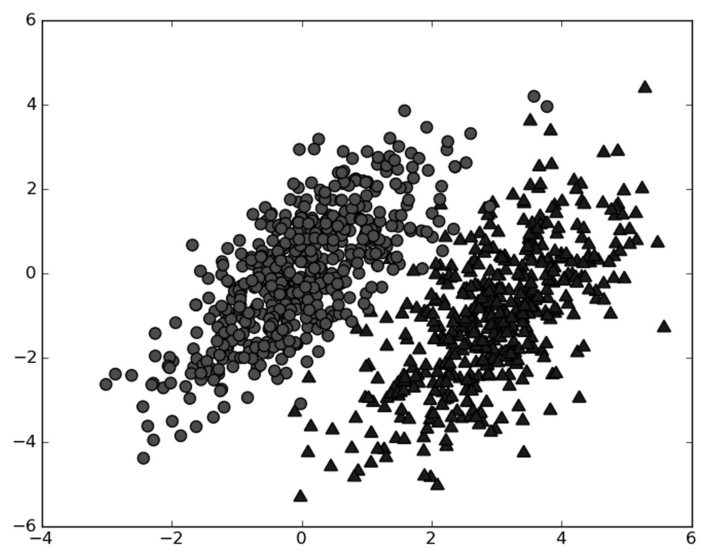
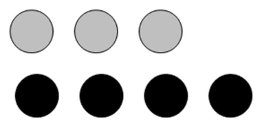
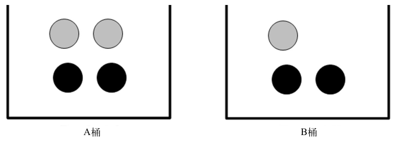
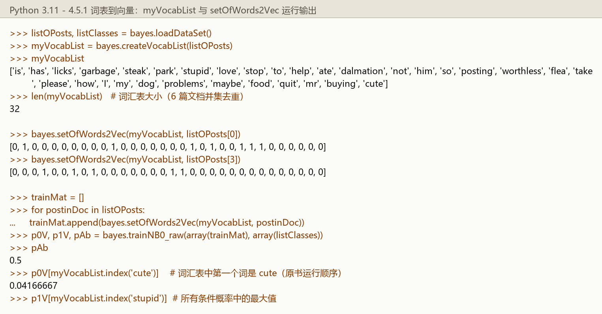
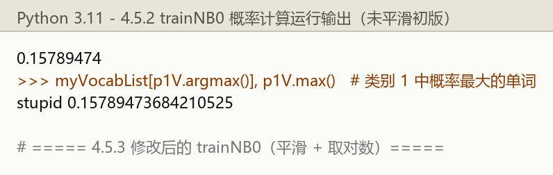
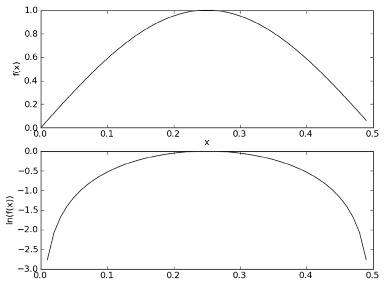
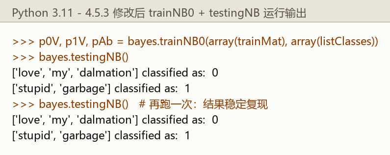
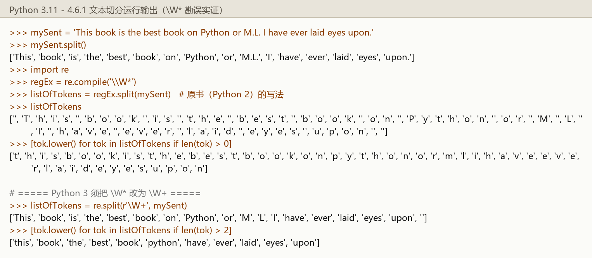
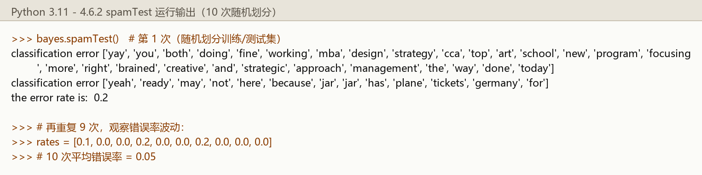
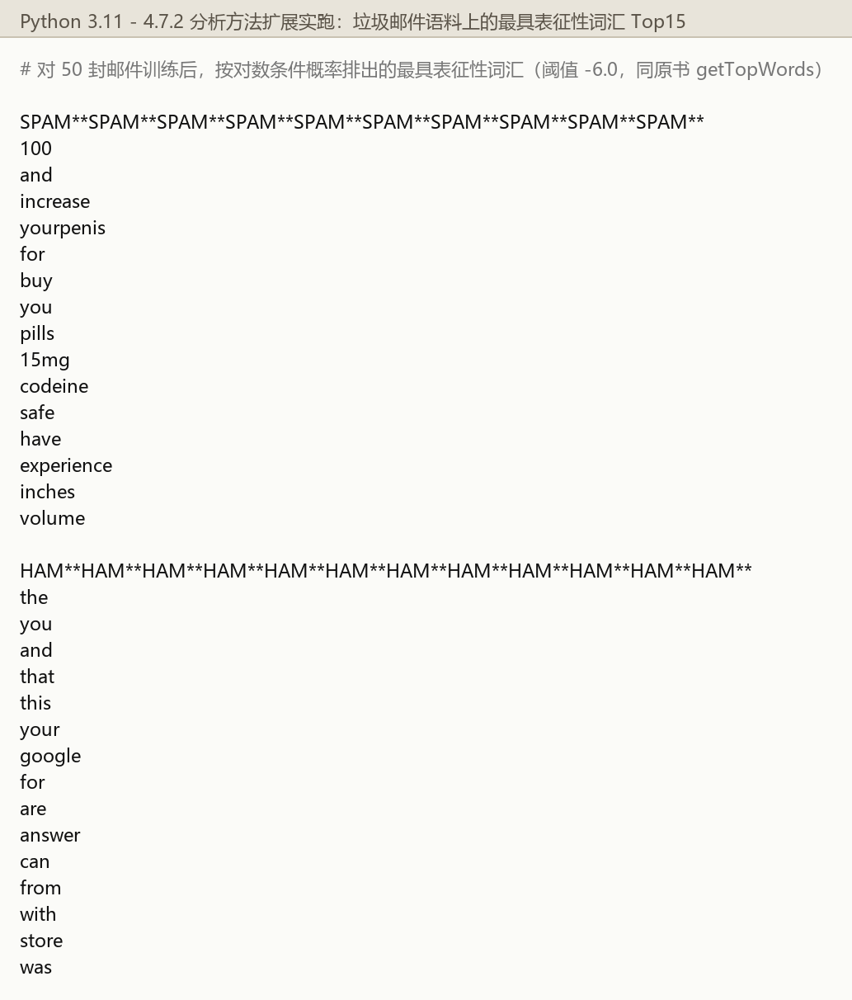

第 4 章 基于概率论的分类方法：朴素贝叶斯#
本章解决：当分类器不必给出"非黑即白"的硬决策、而是给出"最优猜测 + 这个猜测的概率"时，该怎么分类。核心工具是贝叶斯准则与条件概率——通过"每个类别下出现这些特征的概率"反推"该特征组合属于每个类别的概率"，取概率高者。全部理论落在一个最常用的落地场景上：文本分类（侮辱性留言过滤、垃圾邮件过滤、地域用词分析）。
前两章的分类器都要求给出明确答案：这个数据实例属于哪一类。但分类器有时会出错，这时更合理的做法是让它给出一个最优的类别猜测，同时给出这个猜测的概率估计值。
概率论是许多机器学习算法的基础。第 3 章在计算特征取某个值的概率时已经用到一点概率知识——先统计特征在数据集中取某个特定值的次数，再除以数据集的实例总数。本章在此基础上深入。
本章的路线：从一个最简单的概率分类器开始，引入一些假设后得到朴素贝叶斯分类器——之所以叫"朴素"（naive），是因为整个形式化过程只做最原始、最简单的假设。然后利用 Python 的文本处理能力把文档切分成词向量、用词向量做分类：先在留言板数据上完整实现算法，再放到真实的垃圾邮件数据集上检验过滤效果，最后从个人广告中学习分类器，并把学习结果转换成人类可理解的信息。
4.0 本章导图#
4.1 基于贝叶斯决策理论的分类方法#
朴素贝叶斯是贝叶斯决策理论的一部分，所以先快速了解一下贝叶斯决策理论。
假设有一个数据集，由两类数据组成，分布如图 4-1 所示。现在假设我们找到了描述这两类数据的统计参数（暂且不用管参数是怎么找到的，第 10 章会详细介绍）。

用 \(p_1(x, y)\) 表示数据点 \((x, y)\) 属于类别 1（图中圆点）的概率，用 \(p_2(x, y)\) 表示数据点 \((x, y)\) 属于类别 2（图中三角形）的概率。那么对于一个新数据点 \((x, y)\)，可以用下面的规则判断类别：
- 如果 \(p_1(x, y) > p_2(x, y)\)，那么类别为 1；
- 如果 \(p_2(x, y) > p_1(x, y)\)，那么类别为 2。
也就是说，选择高概率对应的类别。这就是贝叶斯决策理论的核心思想：选择具有最高概率的决策。
回到图 4-1：如果整个数据集只用 6 个浮点数就能表示（译者注：整个数据由两类不同分布的数据构成，有可能只需要 6 个统计参数来描述），并且计算类别概率的 Python 代码只有两行，那么下面三种分类方法你选哪个？
| 方法 | 代价 | 评价 |
|---|---|---|
| 用第 1 章的 kNN | 进行 1000 次距离计算 | 相对简单的概率计算，计算量太大 |
| 用第 2 章的决策树 | 分别沿 x 轴、y 轴划分数据 | 对这种分布不会非常成功 |
| 计算数据点属于每个类别的概率，再比较 | 两行代码 | 最佳选择 |
侧栏：贝叶斯概率与频数概率
这里使用的概率解释属于贝叶斯概率理论（Bayesian probability）的范畴，该理论非常流行且效果良好。贝叶斯概率以 18 世纪的一位神学家托马斯·贝叶斯（Thomas Bayes）的名字命名。贝叶斯概率引入先验知识和逻辑推理来处理不确定命题。另一种概率解释称为频数概率（frequency probability），它只从数据本身获得结论，并不考虑逻辑推理及先验知识。
拓展：先验、似然、后验——贝叶斯公式里三个量的名字
后文会反复用到贝叶斯公式，先把三个量的通行叫法对上号，读其他教材不迷路：
| 书中记号 | 通名 | 直觉解释 |
|---|---|---|
| \(P(c)\) | 先验概率（prior） | 还没看到数据前，对"类别是 c"的信念 |
| \(P(x \mid c)\) | 似然（likelihood） | 假设类别是 c，看到数据 x 的可能性 |
| \(P(c \mid x)\) | 后验概率（posterior） | 看到数据 x 之后，反过来对类别的信念 |
贝叶斯准则做的事就一句话：用似然乘先验，得到后验。本章代码里 pAb 是先验、p0V/p1V 是似然，分类器比较的正是后验。
朴素贝叶斯的官方档案：
| 项目 | 内容 |
|---|---|
| 优点 | 在数据较少的情况下仍然有效，可以处理多类别问题 |
| 缺点 | 对于输入数据的准备方式较为敏感 |
| 适用数据类型 | 标称型数据 |
4.2 条件概率#
接下来花点时间讲讲概率与条件概率。如果你对 \(p(x, y \mid c_1)\) 这种符号很熟悉，可以跳过本节。
假设有一个装了 7 块石头的罐子，其中 3 块灰色、4 块黑色（如图 4-2 所示）。随机取出一块石头，是灰色的可能性是多少？取石头有 7 种可能，其中 3 种为灰色，所以取出灰色石头的概率是 3/7；同理取到黑色石头的概率是 4/7。用 \(P(gray)\) 表示取到灰色石头的概率，其值等于灰色石头数目除以总石头数目。

如果这 7 块石头放在两个桶中（如图 4-3 所示），上述概率该如何计算？此时事先得知道石头所在桶的信息——计算"从 B 桶取到灰色石头"的概率，这就是所谓的条件概率（conditional probability）。这个概率记作 \(P(gray \mid bucketB)\)，读作"在已知石头出自 B 桶的条件下，取出灰色石头的概率"。不难得到：
- \(P(gray \mid bucketA) = 2/4\)（A 桶 4 块石头，2 块灰色）；
- \(P(gray \mid bucketB) = 1/3\)（B 桶 3 块石头，1 块灰色）。

条件概率的计算公式如下所示：
用这个公式验算一下：B 桶中灰色石头有 1 块，除以两个桶中总石头数 7，得到 \(P(gray \, and \, bucketB) = 1/7\)；B 桶有 3 块石头，总石头数 7，所以 \(P(bucketB) = 3/7\)。于是
这个公式对图 4-3 的简单例子来说有点复杂，但当存在更多特征时非常有效；用代数方法计算条件概率时，该公式也很有用。
另一种有效计算条件概率的方法称为贝叶斯准则（Bayes rule）。贝叶斯准则告诉我们如何交换条件概率中的条件与结果：如果已知 \(P(x \mid c)\)，要求 \(P(c \mid x)\)，那么可以使用下面的计算方法：
讨论完条件概率，接下来的问题是如何把它应用到分类器中。下一节结合贝叶斯决策理论使用条件概率。
4.3 使用条件概率来分类#
4.1 节提到贝叶斯决策理论要求计算两个概率 \(p_1(x, y)\) 和 \(p_2(x, y)\)，然后比大小。但这两个准则并不是贝叶斯决策理论的所有内容——使用 \(p_1(\,)\)、\(p_2(\,)\) 只是为了尽可能简化描述，真正需要计算和比较的是 \(p(c_1 \mid x, y)\) 和 \(p(c_2 \mid x, y)\)。这两个符号的具体意义是：给定某个由 \(x\)、\(y\) 表示的数据点，该数据点来自类别 \(c_1\) 的概率是多少？来自类别 \(c_2\) 的概率又是多少？
注意，这些概率与刚才的概率 \(p(x, y \mid c_1)\) 并不一样，不过可以使用贝叶斯准则来交换概率中条件与结果。具体地，应用贝叶斯准则得到：
使用这些定义，贝叶斯分类准则为：
- 如果 \(P(c_1 \mid x, y) > P(c_2 \mid x, y)\)，那么属于类别 \(c_1\)；
- 如果 \(P(c_1 \mid x, y) < P(c_2 \mid x, y)\)，那么属于类别 \(c_2\)。
使用贝叶斯准则，可以通过已知的三个概率值来计算未知的概率值：\(p(c_i)\)（每类的先验）容易统计，\(p(x, y \mid c_i)\)（每类下数据点的分布）可以由类别 i 的数据估计，而分母 \(p(x, y)\) 与类别无关。后面就会给出利用贝叶斯准则计算概率并对数据进行分类的代码。
拓展：分类时为什么不用算分母
4.5.3 节的分类函数 classifyNB 里你找不到除以 \(p(w)\) 的那行代码——这不是偷懒。比较两个后验时，要对比的是下面两个分数：
分母 \(p(x)\) 是同一个数（数据点 x 出现的总概率，与类别无关），两边约掉即可。所以只需要比较分子 \(p(x \mid c_i)\, p(c_i)\) 的大小。这个技巧在所有"取 argmax"的贝叶斯分类里通用，也省掉了"把所有可能的 x 概率加起来"这个没法完成的任务。
4.4 使用朴素贝叶斯进行文档分类#
机器学习的一个重要应用是文档的自动分类。在文档分类中，整个文档（如一封电子邮件）是实例，文档中的某些元素构成特征。可以对新闻报道、用户留言、政府公文等任意类型的文本分类。我们可以观察文档中出现的词，把每个词的出现或者不出现作为一个特征，这样得到的特征数目就与词汇表中的词目一样多。朴素贝叶斯是 4.3 节贝叶斯分类器的一个扩展，是文档分类的常用算法。
特征数目会有多少呢？据估计，仅英语中单词的总数就有 500 000 之多（为了能进行英文阅读，估计需要掌握数千单词）。可见特征数目非常庞大。
朴素贝叶斯的一般过程
- 收集数据：可以使用任何方法。本章使用 RSS 源。
- 准备数据：需要数值型或者布尔型数据。
- 分析数据：有大量特征时，绘制特征作用不大，此时使用直方图效果更好。
- 训练算法：计算不同的独立特征的条件概率。
- 测试算法：计算错误率。
- 使用算法：一个常见的朴素贝叶斯应用是文档分类。可以在任意的分类场景中使用朴素贝叶斯分类器，不一定非要是文本。
假设词汇表中有 1000 个单词。要得到好的概率分布，就需要足够的数据样本，假定样本数为 N。回顾前面各章的样本量：约会网站示例有 1000 个实例，手写识别示例每个数字有 200 个样本，决策树示例有 24 个样本——24 个有点少，200 个好一些，1000 个就非常好了。约会网站例子中只有 3 个特征。由统计学知，如果每个特征需要 N 个样本，那么对于 10 个特征将需要 \(N^{10}\) 个样本，对于包含 1000 个特征的词汇表将需要 \(N^{1000}\) 个样本。所需的样本数会随特征数目增大而迅速增长。
如果特征之间相互独立，那么样本数就可以从 \(N^{1000}\) 减少到 \(1000 \times N\)。所谓独立（independence）指的是统计意义上的独立，即一个特征或者单词出现的可能性与它和其他单词相邻没有关系。比如，假设单词 bacon 出现在 unhealthy 后面与出现在 delicious 后面的概率相同。当然，这种假设并不正确——bacon 常常出现在 delicious 附近，而很少出现在 unhealthy 附近。这个假设正是朴素贝叶斯分类器中朴素（naive）一词的含义。
朴素贝叶斯分类器的另一个假设是，每个特征同等重要。这个假设同样有问题：要判断留言板的留言是否得当，可能不需要看完所有 1000 个单词，只需要看其中 10～20 个特征就足以做出判断了。尽管上述假设存在一些小的瑕疵，但朴素贝叶斯的实际效果却很好。
拓展：词集模型与词袋模型——贝努利模型 vs 多项式模型
译者注给出了一个重要背景：朴素贝叶斯分类器通常有两种实现方式——贝努利模型（Bernoulli model）与多项式模型（multinomial model）。本章 4.5.1～4.5.3 采用贝努利实现：只考虑词出不出现、不考虑出现次数，相当于假设词是等权重的，对应的向量表示叫词集模型（set-of-words model）。4.5.4 节给出的词袋模型（bag-of-words model）则考虑词的出现次数，相当于多项式模型。两种模型对应 scikit-learn 里的 BernoulliNB 与 MultinomialNB，4.6 节的垃圾邮件实验用的就是词袋模型。
拓展：朴素贝叶斯真的"朴素"到没用吗
两个假设都与语言事实相悖，但朴素贝叶斯在文本分类上的表现长期不错。原因在于：分类只需要两个后验谁大谁小的排序正确，不要求概率绝对准确——特征间的相关性虽然会歪曲概率的绝对值，但经常不改变排序结果。这也是机器学习的常见现象：强假设 + 简单模型，只要决策方向大致对，就是可用的基线算法。
4.5 使用 Python 进行文本分类#
要从文本中获取特征，需要先拆分文本。这里的特征是来自文本的词条（token）——一个词条是字符的任意组合。可以把词条想象为单词，也可以使用非单词词条，如 URL、IP 地址或者任意其他字符串。然后将每一个文本片段表示为一个词条向量，其中值为 1 表示词条出现在文档中，0 表示词条未出现。
以在线社区的留言板为例。为了不影响社区的发展，要屏蔽侮辱性的言论，所以要构建一个快速过滤器：如果某条留言使用了负面或者侮辱性的语言，就将该留言标识为内容不当。对此问题建立两个类别——侮辱类和非侮辱类，分别用 1 和 0 表示。
接下来先把文本转换为数字向量，再基于这些向量计算条件概率、构建分类器，最后介绍利用 Python 实现朴素贝叶斯过程中需要考虑的问题。
运行环境
本章笔记代码为 Python 3 改写版（原书为 Python 2），函数名与流程与原书一致。保存为 bayes.py 后运行；垃圾邮件实验（4.6 节）读数据用相对路径 email/spam/...、email/ham/...，运行时工作目录需在数据所在目录（即 email 的上一级）。拿不准时先 print(os.getcwd())。
4.5.1 准备数据：从文本中构建词向量#
把文本看成单词向量或者词条向量，也就是将句子转换为向量。做法：考虑出现在所有文档中的所有单词，决定将哪些词纳入词汇表（词汇集合），然后将每一篇文档转换为词汇表上的向量。
# ===== 书 4.5.1 节 程序清单 4-1：词表到向量的转换函数 =====
def loadDataSet():
# 斑点犬爱好者留言板的 6 条实验文本（已切分成词条）与人工标注的类别
postingList = [['my', 'dog', 'has', 'flea', 'problems', 'help', 'please'],
['maybe', 'not', 'take', 'him', 'to', 'dog', 'park', 'stupid'],
['my', 'dalmation', 'is', 'so', 'cute', 'I', 'love', 'him'],
['stop', 'posting', 'stupid', 'worthless', 'garbage'],
['mr', 'licks', 'ate', 'my', 'steak', 'how', 'to', 'stop', 'him'],
['quit', 'buying', 'worthless', 'dog', 'food', 'stupid']]
classVec = [0, 1, 0, 1, 0, 1] # 1 代表侮辱性文字，0 代表正常言论
return postingList, classVec
def createVocabList(dataSet):
vocabSet = set([]) # 创建一个空集合
for document in dataSet:
vocabSet = vocabSet | set(document) # 两集合求并集（| 也是按位或操作符）
return list(vocabSet)
def setOfWords2Vec(vocabList, inputSet):
# 词集模型：词汇表中的词出现了记 1，没出现记 0
returnVec = [0] * len(vocabList) # 创建与词汇表等长的全 0 向量
for word in inputSet:
if word in vocabList:
returnVec[vocabList.index(word)] = 1 # 出现过：对应位置 1
else:
print('the word: %s is not in my Vocabulary!' % word)
return returnVec
三个函数逐个看：
loadDataSet()创建实验样本。返回的第一个变量是切分后的文档集合，来自斑点犬爱好者留言板，标点符号已经去掉（文本处理细节后面探讨）；第二个变量是类别标签集合，两类：侮辱性与非侮辱性。这些文本的类别由人工标注，标注信息用于训练程序以自动检测侮辱性留言。createVocabList()创建所有文档中出现的不重复词列表。利用 Python 的set数据类型：把词条列表输给set构造函数，得到不重复词集合。先创建空集合，再用操作符|把每篇文档的新词集合并入——|是求两个集合的并集的操作符（它同时也是按位或 OR 操作符，参见附录 C；数学上按位或与集合并使用相同记号）。setOfWords2Vec()输入词汇表及某个文档，输出文档向量：每一元素为 1 或 0，表示词汇表中的单词在输入文档中是否出现。先创建与词汇表等长的全 0 向量，再遍历文档中的所有单词，出现词汇表中的词就把对应位置设为 1。一切顺利的话，不需要检查某个词是否还在vocabList中，后边可能会用到这一操作。
运行效果（Python 3.11 实跑，>>> 为交互提示符）：

检查词表，没有重复的单词。该词表目前没有排序，需要的话稍后可以排序。setOfWords2Vec() 的效果：词汇表中每个单词构建一个特征，给定一篇文档就得到词向量。
原书还做了一个抽查："myVocabList 中索引为 2 的元素是什么单词？应该是 help。该单词在第一篇文档中出现，检查它是否出现在第四篇文档中。"——注意 set 是无序的，词表的排列顺序每次运行都可能不同（Python 3 中还受字符串哈希随机化影响），原书的"索引 2"只是它当时那次运行的顺序。用 myVocabList.index('help') 按名字查下标更可靠：实跑中 help 在第一篇文档的向量里对应位置是 1，在第四篇文档的向量里对应位置是 0（图 4.4 可见），结论与原书一致。
4.5.2 训练算法：从词向量计算概率#
前面把一组单词转换成了一组数字，接下来用这些数字计算概率。现在已经知道一个词是否出现在一篇文档中、也知道该文档的类别。重写 4.2 节的贝叶斯准则，将之前的 \(x\)、\(y\) 替换为 \(w\)。粗体 w 表示这是一个向量，由多个数值组成，数值个数与词汇表中的词个数相同：
对每个类计算该值，然后比较两个概率的大小。怎么算？
- \(p(c_i)\)：类别 i（侮辱性留言或非侮辱性留言）中文档数除以总文档数。
- \(p(\boldsymbol{w} \mid c_i)\)：这里就要用到朴素贝叶斯假设。将 \(\boldsymbol{w}\) 展开为一个个独立特征，该概率写作 \(p(w_0, w_1, w_2 \ldots w_N \mid c_i)\)。假设所有词互相独立（条件独立性假设），就可以用
来计算，这就极大地简化了计算过程。
该函数的伪代码如下：
计算每个类别中的文档数目
对每篇训练文档：
对每个类别：
如果词条出现在文档中 → 增加该词条的计数值
增加所有词条的计数值
对每个类别：
对每个词条：
将该词条的数目除以总词条数目，得到条件概率
返回每个类别的条件概率
# ===== 书 4.5.2 节 程序清单 4-2：朴素贝叶斯分类器训练函数（原书初版，未平滑） =====
def trainNB0(trainMatrix, trainCategory):
numTrainDocs = len(trainMatrix) # 文档数
numWords = len(trainMatrix[0]) # 词汇表长度（每篇文档向量等长）
pAbusive = sum(trainCategory) / float(numTrainDocs) # P(1)：侮辱性文档占比
p0Num = zeros(numWords); p1Num = zeros(numWords) # 各词的计数分子（初版为 0）
p0Denom = 0.0; p1Denom = 0.0 # 各类总词数（初版为 0）
for i in range(numTrainDocs):
if trainCategory[i] == 1: # 侮辱性文档：累计到类别 1
p1Num += trainMatrix[i] # 向量逐元素相加：出现过的词计数 +1
p1Denom += sum(trainMatrix[i]) # 该文档总词数累加
else: # 正常文档：累计到类别 0
p0Num += trainMatrix[i]
p0Denom += sum(trainMatrix[i])
p1Vect = p1Num / p1Denom # 每个词在类别 1 中的条件概率
p0Vect = p0Num / p0Denom # （初版未取对数）
return p0Vect, p1Vect, pAbusive
输入参数为文档矩阵 trainMatrix（每行一篇文档的词向量）和类别标签向量 trainCategory。先计算文档属于侮辱性文档（class=1）的概率，即 \(P(1)\)；这是二类分类问题，用 \(1 - P(1)\) 就能得到 \(P(0)\)。多于两类的分类问题需对代码稍加修改。
要计算 \(p(w_i \mid c_1)\) 和 \(p(w_i \mid c_0)\)，需初始化分子变量（p1Num/p0Num）和分母变量（p1Denom/p0Denom）。由于 \(w\) 中元素众多，用 NumPy 数组快速计算：分母变量本身就是一个元素个数等于词汇表大小的普通数（累计各文档词数之和），分子是与词汇表等长的 NumPy 数组。for 循环遍历所有文档：某个词在某文档中出现，该词的计数（p1Num 或 p0Num 对应元素）加 1，同时该类别的总词数也相应加 1。两个类别都做同样处理。最后对每个元素除以该类别的总词数——NumPy 里一个数组除以一个浮点数即可；若用常规 Python 列表则难以完成这种任务（可以自己试试）。
在 Python 提示符下试验（对应原书交互）：
# ===== 书 4.5.2 节 训练交互 =====
from numpy import *
import bayes
listOPosts, listClasses = bayes.loadDataSet() # 从预先加载值中调入数据
myVocabList = bayes.createVocabList(listOPosts) # 构建包含所有词的列表
trainMat = []
for postinDoc in listOPosts: # 用词向量填充 trainMat
trainMat.append(bayes.setOfWords2Vec(myVocabList, postinDoc))
p0V, p1V, pAb = bayes.trainNB0(array(trainMat), array(listClasses))
运行输出（代码实跑）：

看这些变量的内部值：
- \(p_{Ab} = 0.5\)：任意文档属于侮辱性文档的概率是 0.5——6 篇文档里 3 篇侮辱、3 篇正常，正确。
- 词汇表中第一个词是 cute（原书那次运行的顺序）：它在类别 0 中出现 1 次、类别 1 中从未出现，对应条件概率 \(p_0(cute) = 1/24 \approx 0.04166667\) 与 0.0。类别 0 的 3 篇文档共有 24 个词（7+8+9），验算正确。
- 找所有概率中的最大值：出现在 \(p_1\) 数组原书运行顺序的第 26 个下标位置，大小 0.15789474。查
myVocabList该下标的单词是 stupid——这意味着 stupid 是最能表征类别 1（侮辱性文档类）的单词。（实跑里词表顺序不同，用p1V.argmax()定位，最大值同样落在 stupid 上，概率 = 3/19：stupid 在 3 篇侮辱性文档中各出现 1 次，类别 1 共 19 个词。）
4.5.3 测试算法：根据现实情况修改分类器#
利用贝叶斯分类器对文档分类时，要计算多个概率的乘积来获得文档属于某个类别的概率，即计算 \(p(w_0 \mid 1)\, p(w_1 \mid 1)\, p(w_2 \mid 1)\)。这里有两个缺陷，逐一修掉。
缺陷一：零概率乘积。 如果其中一个概率值为 0，那么最后的乘积也为 0。比如"某个词在训练集的该类别中从未出现"，这条文档的整个概率就被一个词拖垮了。为降低这种影响，可以将所有词的出现数初始化为 1，并将分母初始化为 2（即拉普拉斯平滑）。打开 bayes.py，把 trainNB0() 的第 4 行和第 5 行修改为：
# ===== 书 4.5.3 节 修改①：拉普拉斯平滑 =====
p0Num = ones(numWords); p1Num = ones(numWords) # 修改：zeros → ones，出现数初始化为 1
p0Denom = 2.0; p1Denom = 2.0 # 修改：0.0 → 2.0，分母初始化为 2
缺陷二：下溢出。 这是太多很小的数相乘造成的。计算乘积 \(p(w_0 \mid c_i)\, p(w_1 \mid c_i) \cdots p(w_N \mid c_i)\) 时，大部分因子都非常小，程序会下溢出（underflow）或者得到不正确的答案（用 Python 相乘许多很小的数试试，最后四舍五入后会得到 0）。解决办法是对乘积取自然对数：代数中有 \(\ln(a \times b) = \ln(a) + \ln(b)\)，通过求对数可以避免下溢出或者浮点数舍入导致的错误。同时，采用自然对数进行处理不会有任何损失。图 4-6 给出函数 \(f(x)\) 与 \(\ln(f(x))\) 的曲线：两条曲线在相同区域内同时增加或减少，并且在相同点上取到极值。它们的取值虽然不同，但不影响最终结果。修改 return 前的两行代码：
# ===== 书 4.5.3 节 修改②：取自然对数 =====
p1Vect = log(p1Num / p1Denom) # 修改：对条件概率取自然对数
p0Vect = log(p0Num / p0Denom)

拓展：拉普拉斯平滑的通用形式
"分子加 1、分母加 2"是平滑的一个特例。通用写法（additive smoothing）：对取值有 K 种可能的特征，计数每项加 \(\alpha\)（常取 \(\alpha = 1\)），分母加 \(K\alpha\)。本章词汇表特征是二值的（出现 / 不出现），K = 2，所以分母加 \(2 \times 1 = 2\)。平滑后的概率不再有为 0 的项，且所有概率加起来仍然等于 1。垃圾邮件实验（4.6 节）换成词袋模型后，分母同理是"该类总词数 + 2"。
现在已经准备好构建完整的分类器了。用 NumPy 向量处理功能时，这一切变得十分简单：
# ===== 书 4.5.3 节 程序清单 4-3：朴素贝叶斯分类函数 =====
def classifyNB(vec2Classify, p0Vec, p1Vec, pClass1):
# 两个向量对应元素相乘（第 1 个元素乘第 1 个，第 2 个乘第 2 个，以此类推）再求和，
# 加上类别先验的对数——比较的是"对数后验"，分母 p(w) 已省去（见 4.3 节拓展）
p1 = sum(vec2Classify * p1Vec) + log(pClass1)
p0 = sum(vec2Classify * p0Vec) + log(1.0 - pClass1)
if p1 > p0:
return 1
else:
return 0
def testingNB():
# 便利函数（convenience function）：封装所有操作，节省输入时间
listOPosts, listClasses = loadDataSet()
myVocabList = createVocabList(listOPosts)
trainMat = []
for postinDoc in listOPosts:
trainMat.append(setOfWords2Vec(myVocabList, postinDoc))
p0V, p1V, pAb = trainNB0(array(trainMat), array(listClasses))
testEntry = ['love', 'my', 'dalmation']
thisDoc = array(setOfWords2Vec(myVocabList, testEntry))
print(testEntry, 'classified as: ', classifyNB(thisDoc, p0V, p1V, pAb))
testEntry = ['stupid', 'garbage']
thisDoc = array(setOfWords2Vec(myVocabList, testEntry))
print(testEntry, 'classified as: ', classifyNB(thisDoc, p0V, p1V, pAb))
classifyNB() 有 4 个输入：要分类的向量 vec2Classify，以及 trainNB0() 计算得到的三个概率。vec2Classify * p1Vec 是 NumPy 的对应元素相乘；再把词汇表中所有词的对应值相加，加到类别的对数概率上；最后比较类别概率，返回大概率对应的类别标签。
运行结果（代码实跑）：

对文本做一些修改，看看分类器会输出什么结果。这个例子非常简单，但它展示了朴素贝叶斯分类器的工作原理。实跑中两条测试句的内部数值：love 句 \(p_1 = -9.8267 < p_0 = -7.6948\)，判 0（正常）；stupid 句 \(p_1 = -4.7028 > p_0 = -7.2093\)，判 1（侮辱）。
4.5.4 准备数据：文档词袋模型#
目前为止，我们将每个词的出现与否作为一个特征，这可以被描述为词集模型（set-of-words model）。如果一个词在文档中出现不止一次，这可能意味着包含该词是否出现在文档中所不能表达的某种信息，这种方法被称为词袋模型（bag-of-words model）。词袋中的每个单词可以出现多次，而词集中的每个词只能出现一次。为适应词袋模型，对 setOfWords2Vec() 稍加修改，得到下面的函数：
# ===== 书 4.5.4 节 程序清单 4-4：朴素贝叶斯词袋模型 =====
def bagOfWords2VecMN(vocabList, inputSet):
# 与 setOfWords2Vec 几乎完全相同，唯一区别：
# 每遇到一个单词，词向量对应值加 1（计数），而不是设为 1
returnVec = [0] * len(vocabList)
for word in inputSet:
if word in vocabList:
returnVec[vocabList.index(word)] += 1
return returnVec
函数名中的 MN 是多项式（multinomial）的缩写——对应 4.4 节拓展里的多项式模型。现在分类器已经构建好了，下面用它来过滤垃圾邮件。
4.6 示例：使用朴素贝叶斯过滤垃圾邮件#
前面的简单例子用的是预先给好的字符串列表。用朴素贝叶斯解决现实问题时，需要先从文本内容得到字符串列表，再生成词向量。本节做朴素贝叶斯最著名的应用：电子邮件垃圾过滤。
示例：使用朴素贝叶斯对电子邮件进行分类
- 收集数据：提供文本文件。
- 准备数据：将文本文件解析成词条向量。
- 分析数据：检查词条确保解析的正确性。
- 训练算法：使用之前建立的
trainNB0()函数。 - 测试算法：使用
classifyNB()，并构建一个新的测试函数来计算文档集的错误率。 - 使用算法：构建一个完整的程序对一组文档进行分类，将错分的文档输出到屏幕上。
4.6.1 准备数据：切分文本#
前一节的词向量是预先给定的，现在从文本文档构建自己的词列表。对一个文本字符串，可以用 Python 的 string.split() 方法切分：
# ===== 书 4.6.1 节：最朴素的切分 =====
mySent = 'This book is the best book on Python or M.L. I have ever laid eyes upon.'
mySent.split()
# ['This', 'book', 'is', 'the', 'best', 'book', 'on', 'Python', 'or',
# 'M.L.', 'I', 'have', 'ever', 'laid', 'eyes', 'upon.']
切分结果不错，但标点符号也被当成了词的一部分（M.L.、upon.）。改用正则表达式切分句子，分隔符是除单词、数字外的任意字符串：
# ===== 书 4.6.1 节：正则切分 =====
import re
regEx = re.compile('\\W*') # 原书（Python 2）的写法
listOfTokens = regEx.split(mySent) # 切完：词与标点分离，出现空串
# ['This', 'book', 'is', 'the', 'best', 'book', 'on', 'Python', 'or', 'M', 'L',
# '', 'I', 'have', 'ever', 'laid', 'eyes', 'upon', '']
现在得到了词表，但里面有空字符串，需要去掉：计算每个字符串的长度，只返回长度大于 0 的字符串。最后发现句子第一个单词是大写的——句子查找时这个特点有用，但这里文本只看成词袋，希望所有词的形式统一（不论出现在句中、句尾还是句首）。用字符串内嵌方法 .lower()（转小写）或 .upper()（转大写）统一：
# ===== 书 4.6.1 节：过滤与统一大小写 =====
[tok.lower() for tok in listOfTokens if len(tok) > 0]
# ['this', 'book', 'is', 'the', 'best', 'book', 'on', 'python', 'or', 'm',
# 'l', 'i', 'have', 'ever', 'laid', 'eyes', 'upon']
[tok.lower() for tok in listOfTokens if len(tok) > 2]
# ['this', 'book', 'the', 'best', 'book', 'python', 'have', 'ever', 'laid', 'eyes', 'upon']
原书笔误：re.split(r'\W*') 在 Python 3 下会逐字符切分
原书的切分正则是 re.split(r'\W*', ...)，在 Python 3（3.7+）中会把句子切成单个字符——\W* 可以匹配空串，Python 3 的 re.split 在每个字符间都发生一次零宽匹配。实测对比：

Python 2 中 \W* 的行为是"按非单词字符切分"，改写为 Python 3 必须把它换成 r'\W+'（一个或多个非单词字符），输出才能与原书一致。本笔记后续代码一律用 r'\W+'。
再看数据集中一封完整邮件的实际处理结果。数据集放在 email 文件夹中，包含两个子文件夹 spam（垃圾邮件）与 ham（正常邮件），各 25 封：
# ===== 书 4.6.1 节：完整邮件的切分 =====
emailText = open('email/ham/6.txt', encoding='latin-1').read()
listOfTokens = re.split(r'\W+', emailText)
# 切出 200 多个词，其中混着 en、py 这样的碎片——
# 它们来自 URL：answer.py?hl=en&answer=174623
[tok.lower() for tok in listOfTokens if len(tok) > 2] # 过滤后 en、py 消失
文件夹 ham 下的 6.txt 非常长，是某公司告知作者不再提供某些支持的邮件。URL 切分会得到很多碎片词（en、py 等），我们想滤掉它们，因此过滤掉长度小于 3 的字符串（实跑验证：6.txt 共 1458 字符，\W+ 切出 257 个词，过滤后 en、py 全部消失）。本例用一个通用的文本解析规则；实际解析程序应该用更高级的过滤器处理 HTML 和 URI——目前一个 URI 最终会解析成词汇表中的单词（如 www.whitehouse.gov 会解析成三个单词）。文本解析可能相当复杂，这里构建的是极简函数，可按需修改。
4.6.2 测试算法：使用朴素贝叶斯进行交叉验证#
把文本解析器集成到完整分类器中：
# ===== 书 4.6.2 节 程序清单 4-5：文件解析及完整的垃圾邮件测试函数 =====
def textParse(bigString): # 输入大字符串，输出词条列表
# 原书 r'\W*' 为 Python 2 写法，Python 3 会逐字符切分，勘误为 r'\W+'（见图 4.8）
listOfTokens = re.split(r'\W+', bigString)
return [tok.lower() for tok in listOfTokens if len(tok) > 2]
# 过滤掉少于三个字符的字符串，并全部转为小写
def spamTest():
docList = []; classList = []; fullText = []
for i in range(1, 26):
# 导入并解析文本文件。Python 3 须显式指定 encoding，
# 否则 Windows 默认 GBK 会报 UnicodeDecodeError（见"坑与陷阱"）
wordList = textParse(open('email/spam/%d.txt' % i, encoding='latin-1').read())
docList.append(wordList)
fullText.extend(wordList)
classList.append(1) # 垃圾邮件标记 1
wordList = textParse(open('email/ham/%d.txt' % i, encoding='latin-1').read())
docList.append(wordList)
fullText.extend(wordList)
classList.append(0) # 正常邮件标记 0
vocabList = createVocabList(docList) # 创建词汇表
trainingSet = list(range(50)); testSet = [] # 原书 trainingSet = range(50)，Py3 须 list
for i in range(10): # 随机构建训练集
randIndex = int(random.uniform(0, len(trainingSet)))
testSet.append(trainingSet[randIndex]) # 抽中的进测试集
del (trainingSet[randIndex]) # 并从训练集剔除
trainMat = []; trainClasses = []
for docIndex in trainingSet: # 训练分类器（计算概率）
trainMat.append(bagOfWords2VecMN(vocabList, docList[docIndex]))
trainClasses.append(classList[docIndex])
p0V, p1V, pSpam = trainNB0(array(trainMat), array(trainClasses))
errorCount = 0
for docIndex in testSet: # 对测试集分类
wordVector = bagOfWords2VecMN(vocabList, docList[docIndex])
if classifyNB(array(wordVector), p0V, p1V, pSpam) != classList[docIndex]:
errorCount += 1
print('classification error', docList[docIndex])
print('the error rate is: ', float(errorCount) / len(testSet))
# return vocabList, fullText
两个函数分工：
textParse()接受一个大字符串，解析为字符串列表：去掉少于两个字符的字符串（保留长度大于 2 的），全部转小写。可以添加更多解析操作，目前的实现够用。spamTest()对贝叶斯垃圾邮件分类器自动化：导入spam与ham文件夹的文本并解析为词列表，然后构建测试集与训练集——两个集合中的邮件都是随机选出的。共 50 封邮件，其中 10 封被随机选为测试集，概率计算只用训练集完成。trainingSet是 0 到 49 的整数列表；随机选择 10 个，选中的文档加入测试集并从训练集剔除。这种随机选择数据的一部分作为训练集、剩余部分作为测试集的过程称为留存交叉验证（hold-out cross validation）。只完成一次迭代的话，为更精确地估计错误率，应该进行多次迭代后求平均。
运行结果（代码实跑）：

spamTest() 输出 10 封随机选择的电子邮件上的分类错误率。既然邮件是随机选择的，每次输出结果会有些差别：实跑 10 次得到 [0.1, 0.0, 0.0, 0.2, 0.0, 0.0, 0.2, 0.0, 0.0, 0.0]，平均错误率 5%；原书作者重复 10 次得到的平均错误率为 6%——同一量级，波动来自随机划分。发现错误时函数会输出错分文档的词表，方便定位是哪篇文档发生了错误。
拓展：两类错误并不等价
实跑中错分的两封都是正常邮件被误判为垃圾（ham→spam，分别是 'yay to you both doing fine...' 与 'yeah i am ready... jar jar has plane tickets' 这两封短信体邮件）；而原书观察到的是"一直出现的错误是将垃圾邮件误判为正常邮件"（spam→ham）。方向因随机划分而异，但原书点出的核心值得记住：将正常邮件归到垃圾邮件比漏进一封垃圾邮件代价大得多——用户可能因此错过重要邮件。为避免错误而修正分类器的方法将在第 7 章讨论（两类错误的权衡涉及 ROC、代价敏感等主题）。
拓展：留存交叉验证只是起点
留存交叉验证（hold-out）每轮只用一部分数据训练、另一部分测试，简单快速，但估计有方差（本节错误率 0%～20% 的波动就是体现）。更常用的做法是 k 折交叉验证（k-fold cross validation）：把数据均分为 k 份，轮流用其中 1 份做测试、其余 k-1 份做训练，k 次结果的平均更稳。数据量大的场景（如这里的 50 封邮件再加随机重复）留存法就够用。
4.7 示例：使用朴素贝叶斯分类器从个人广告中获取区域倾向#
本章最后一个例子非常有趣。前面已经用朴素贝叶斯过滤恶意留言、过滤垃圾邮件，分类还有大量其他应用：有人用朴素贝叶斯从他喜欢及不喜欢的女性社交网络档案学习分类器，测试他是否会喜欢一个陌生女人；有证据表明人的用词与其年龄等属性相关——那么可以基于一个人的用词推测他的年龄吗？除了年龄还能推测什么？广告商往往想知道关于一个人的特定人口统计信息，以便更好地定向推销广告。训练数据从哪来？互联网上拥有大量训练数据：几乎任何一个能想到的利基市场（niche，译者注：针对企业的优势细分出来的市场，针对性和专业性都很强）都有专业社区——4.5.1 节的斑点犬爱好者网站就是很好的例子。
在这个最后的例子中，分别从美国的两个城市（纽约与旧金山）选取一些人，通过分析这些人发布的征婚广告，比较两个城市的人在广告用词上是否不同。如果确实不同，他们各自常用的词是哪些？从用词当中，能否对不同城市的人所关心的内容有所了解？
示例：使用朴素贝叶斯来发现地域相关的用词
- 收集数据：从 RSS 源收集内容，这里需要对 RSS 源构建一个接口。
- 准备数据：将文本文件解析成词条向量。
- 分析数据：检查词条确保解析的正确性。
- 训练算法：使用之前建立的
trainNB0()函数。 - 测试算法：观察错误率，确保分类器可用。可以修改切分程序，以降低错误率，提高分类结果。
- 使用算法：构建一个完整的程序，封装所有内容。给定两个 RSS 源，该程序会显示最常用的公共词。
注意本例的目标：不是使用分类器进行分类，而是通过观察单词和条件概率值，发现与特定城市相关的内容。
4.7.1 收集数据：导入 RSS 源#
第一件事是用 Python 下载文本。利用 RSS（Really Simple Syndication，简易信息聚合）很容易得到。所需的是一个 RSS 阅读器——Universal Feed Parser 是 Python 中最常用的 RSS 程序库，即 feedparser 模块（pip install feedparser 即可安装；原书的 python setup.py install 是当年的安装方式）。
原书使用 Craigslist 上的个人广告 RSS 源（在服务条款允许的条件下）。打开 RSS 源并访问所有条目：
# ===== 书 4.7.1 节：导入 RSS 源（原书 Python 2 写法） =====
>>> import feedparser
>>> ny = feedparser.parse('http://newyork.craigslist.org/stp/index.rss')
>>> sf = feedparser.parse('http://sfbay.craigslist.org/stp/index.rss')
>>> ny['entries'] # 所有条目的列表
>>> len(ny['entries']) # 条目数量
过时提示：无法复现原书数据
Craigslist 的 RSS 输出与 Google Feed API 均已停止服务，feedparser.parse 抓不到原书的数据源，本节无法按原书数据实跑；本节代码按 Python 3 语法忠实呈现（分析结果用原书输出，见 4.7.2）。feedparser 库本身仍可安装使用，换用仍然存活的 RSS 源即可运行同样的流程。
可以构建一个类似 spamTest() 的函数来自动化测试过程：
# ===== 书 4.7.1 节 程序清单 4-6：RSS 源分类器及高频词去除函数（Python 3 改写） =====
def calcMostFreq(vocabList, fullText):
import operator
freqDict = {}
for token in vocabList:
freqDict[token] = fullText.count(token) # 统计每个词在全部文本中的出现次数
# 原书 iteritems() 为 Python 2 写法，Python 3 改 items()
sortedFreq = sorted(freqDict.items(), key=operator.itemgetter(1), reverse=True)
return sortedFreq[:30] # 返回出现次数最高的前 30 个词
def localWords(feed1, feed0):
import feedparser
docList = []; classList = []; fullText = []
minLength = min(len(feed1['entries']), len(feed0['entries']))
for i in range(minLength): # 每次访问一条 RSS 源
wordList = textParse(feed1['entries'][i]['summary'])
docList.append(wordList)
fullText.extend(wordList)
classList.append(1) # NY 是类别 1
wordList = textParse(feed0['entries'][i]['summary'])
docList.append(wordList)
fullText.extend(wordList)
classList.append(0)
vocabList = createVocabList(docList) # 创建词汇表
top30Words = calcMostFreq(vocabList, fullText) # 去掉出现次数最高的 30 个词
for pairW in top30Words:
if pairW[0] in vocabList: vocabList.remove(pairW[0])
trainingSet = list(range(2 * minLength)); testSet = [] # 创建测试集
for i in range(20): # 随机抽 20 篇做测试
randIndex = int(random.uniform(0, len(trainingSet)))
testSet.append(trainingSet[randIndex])
del (trainingSet[randIndex])
trainMat = []; trainClasses = []
for docIndex in trainingSet: # 训练分类器
trainMat.append(bagOfWords2VecMN(vocabList, docList[docIndex]))
trainClasses.append(classList[docIndex])
p0V, p1V, pSpam = trainNB0(array(trainMat), array(trainClasses))
errorCount = 0
for docIndex in testSet: # 对测试集分类
wordVector = bagOfWords2VecMN(vocabList, docList[docIndex])
if classifyNB(array(wordVector), p0V, p1V, pSpam) != classList[docIndex]:
errorCount += 1
print('the error rate is: ', float(errorCount) / len(testSet))
return vocabList, p0V, p1V
代码类似程序清单 4-5 的 spamTest()，新增的功能：
- 辅助函数
calcMostFreq()：遍历词汇表中的每个词，统计它在文本中出现的次数；按出现次数从高到低对词典排序，返回最高的 30 个单词。这个函数很重要（下面马上解释）。 localWords()使用两个 RSS 源作为参数。RSS 源要在函数外导入：RSS 源会随时间而改变，想通过改代码比较程序执行的差异，就应该使用相同的输入——重新加载 RSS 源会得到新数据，很难确定输出变化是代码原因还是输入原因。- 主体与
spamTest()几乎相同，区别是访问 RSS 源而不是文件；然后调用calcMostFreq()获得最高的 30 个单词并将它们从词汇表中移除；最后一行返回vocabList, p0V, p1V，供后面的分析使用。
为什么移除高频词：可以注释掉移除高频词的三行代码，比较前后的分类性能。原书实验中，这些留言里出现次数最多的前 30 个词涵盖了所有用词的 30%——测试时 vocabList 大小约 3000 个词，也就是说词汇表中的一小部分单词占据了所有文本用词的一大部分。原因是语言中大部分都是冗余和结构辅助性内容。另一个常用方法是不仅移除高频词，同时从某个预定词表中移除结构上的辅助词，该词表称为停用词表（stop word list），网上可以找到许多现成的多语言停用词列表。
原书数据存疑：54% 与 70%
中文版原文为"去掉这几行代码之后，我发现错误率为 54%，而保留这些代码得到的错误率为 70%"。这句有两处可疑：其一，测试集固定 20 篇文档，错误率只能是 5% 的整数倍，54% 对不上；其二，它与后文"移除停用词的话，分类错误率也会降低"的叙述方向相反（移除冗余高频词应当有帮助）。阅读时以方法论为准——先去掉无信息量的高频词，再训练——具体数字不必较真。
拓展：Zipf 定律——为什么前 30 词能吃掉 30% 的用词
"一小部分单词占据大部分用词"是语言的普遍规律，称为 Zipf 定律（Zipf's law）：把词按出现频率从高到低排序，第 k 名词的频率约与 \(1/k\) 成正比——极少数高频词（the、of、and……）占据了文本的半壁江山，而绝大多数词只出现一两次。高频词几乎在两个类别的文档中都同样出现，对分类没有区分度，反而稀释了条件概率的估计，所以训练前先移除它们。
4.7.2 分析数据：显示地域相关的用词#
先对向量 pSF 与 pNY 排序，然后按照顺序将词打印出来。最后一段代码完成这部分工作：
# ===== 书 4.7.2 节 程序清单 4-7：最具表征性的词汇显示函数 =====
def getTopWords(ny, sf):
import operator
vocabList, p0V, p1V = localWords(ny, sf) # 训练并测试，返回概率向量
topNY = []; topSF = []
for i in range(len(p0V)):
# 与其返回排名最高的 X 个单词，不如返回大于某个阈值的所有词
if p0V[i] > -6.0: topSF.append((vocabList[i], p0V[i]))
if p1V[i] > -6.0: topNY.append((vocabList[i], p1V[i]))
sortedSF = sorted(topSF, key=lambda pair: pair[1], reverse=True) # 按条件概率排序
print("SF**SF**SF**SF**SF**SF**SF**SF**SF**SF**SF**SF**SF**SF**")
for item in sortedSF:
print(item[0])
sortedNY = sorted(topNY, key=lambda pair: pair[1], reverse=True)
print("NY**NY**NY**NY**NY**NY**NY**NY**NY**NY**NY**NY**NY**NY**")
for item in sortedNY:
print(item[0])
getTopWords() 使用两个 RSS 源作为输入，训练并测试朴素贝叶斯分类器，返回使用的概率值；然后创建两个列表存储元组（词、对数条件概率）。这里返回大于某个阈值（-6.0）的所有词，元组按条件概率排序后打印。
RSS 源已停服，无法实跑原书场景，但这个分析方法本身可以验证——用还能运行的垃圾邮件语料（spam/ham 各 25 封）走一遍同样的流程（训练 → 按对数条件概率排序 → 打印阈值之上的词），替代原书的 SF/NY：

spam 侧排出来的是 '100'、'increase'、'buy'、'pills'、'15mg'、'codeine' 这类典型的垃圾话术，ham 侧则是 the、you、and——与原书观察到的现象完全一致：程序输出了大量的停用词。原书的做法是移除固定的停用词再看看结果如何变化；依作者经验，这样做分类错误率也会降低。想复现原书地域分析的话，把 4.7.1 的 RSS 源换成任意两个仍存活的 RSS 源（用同一套 localWords + getTopWords）即可。
4.8 本章小结#
- 对分类而言，使用概率有时要比使用硬规则更为有效。贝叶斯概率及贝叶斯准则提供了一种利用已知值来估计未知概率的有效方法。
- 通过特征之间的条件独立性假设，可以降低对数据量的需求。独立性假设是指一个词的出现概率并不依赖于文档中的其他词——这个假设过于简单，这正是"朴素"的由来；尽管条件独立性假设并不正确，朴素贝叶斯仍然是一种有效的分类器。
- 用现代编程语言实现朴素贝叶斯需要考虑很多实际因素：下溢出可以通过对概率取对数来解决；词袋模型在文档分类上比词集模型有所提高；还可以移除停用词、花大量时间优化切分器。
- 本章学习到的概率理论将在后续章节中用到。下一章暂时离开概率理论，介绍另一种分类方法 Logistic 回归及一些优化算法。
坑与陷阱#
8 个容易踩的坑
re.split(r'\W*')在 Python 3 逐字符切分：\W*能匹配空串，Py3.7+ 的 split 在每个字符间零宽匹配，整句变成单字符数组。必须改r'\W+'（实测见 4.6.1 图 4.8）。这是本章最经典的 Py2→Py3 坑。- 零概率乘积拖垮整个后验：某词在训练集某类别中一次都没出现，\(p(w_i \mid c_i) = 0\)，连乘后整个文档概率为 0。训练前把分子初始化为 1、分母初始化为 2（拉普拉斯平滑）。
- 下溢出：几十个小数连乘会小到浮点数存不下，四舍五入成 0。对乘积取自然对数，\(\ln(a \times b) = \ln(a) + \ln(b)\)，乘法变加法，极值位置不变。
set无序，别背词表下标：createVocabList返回的词表顺序每次运行都可能不同（Py3 还有哈希随机化）。原书"索引 2 是 help""第 26 个下标是 stupid"只对它那次运行成立；定位词用index()，定位最大值用argmax()。- Windows 下
open()默认 GBK 编码：读邮件文件直接UnicodeDecodeError。显式传encoding='latin-1'（每个字节都有映射，纯 ASCII 内容与原书按字节读取结果一致）或'utf-8'。 - Python 3 中
trainingSet = range(50)不能del：range是不可变对象，del(trainingSet[randIndex])直接报错。要写list(range(50))。同理iteritems()→items()、reload()→importlib.reload()、print 加括号。 - 错误率单次不可信：50 封邮件随机留 10 封测试，单次错误率在 0%～20% 之间跳动。想报告一个像样的数字，重复多次求平均（原书 10 次平均 6%，本笔记实跑 10 次平均 5%）。
- 对输入数据的准备方式较为敏感：切分正则、长度过滤阈值、是否去停用词/高频词，每一步都会显著改变结果。这不是 bug，是朴素贝叶斯的固有特点（官方档案里明写的缺点），调参时逐项排查。
速览#
- 贝叶斯决策理论核心：选择具有最高概率的决策。比较 \(p(c_1 \mid x)\) 与 \(p(c_2 \mid x)\)，取大者；无需硬规则。
- 条件概率：\(P(gray \mid bucketB) = P(gray \, and \, bucketB) / P(bucketB)\)；7 块石头实验里 \(= (1/7)/(3/7) = 1/3\)。
- 贝叶斯准则交换条件与结果：\(p(c_i \mid x, y) = p(x, y \mid c_i)\, p(c_i) / p(x, y)\)；分类时分母与类别无关，只比较分子。
- 两个朴素假设：特征相互独立（样本需求从 \(N^{1000}\) 降到 \(1000 \times N\)）+ 特征同等重要。有瑕疵但效果好。
- 文本分类流水线：切分文本 →
createVocabList建词汇表 →setOfWords2Vec/bagOfWords2VecMN转词向量 →trainNB0算条件概率 →classifyNB比大小。 trainNB0三件产出：\(p(w_i \mid c_0)\) 向量、\(p(w_i \mid c_1)\) 向量、先验 \(p(c_1)\)（留言板实验 = 0.5）；最能表征侮辱类的词是 stupid（3/19 = 0.15789474）。- 两个工程修正：拉普拉斯平滑（分子 +1、分母 +2，防零概率）+ 取自然对数（防下溢出，不改变大小关系）。
- 词集模型只记出现与否（贝努利模型），词袋模型记出现次数（多项式模型）；垃圾邮件实验用词袋。
- 垃圾邮件实验：
textParse用 \(r'\W+'\) 切分并滤掉长度 ≤2 的词；随机留 10/50 封测试（留存交叉验证），10 次平均错误率约 5%～6%；正常邮件被误判比垃圾邮件漏网代价更大。 - RSS 地域分析：
localWords训练前移除最高频的 30 个词（前 30 词覆盖约 30% 用词，语言冗余所致，参见 Zipf 定律）；getTopWords打印对数条件概率大于 -6.0 的词、按概率排序；输出中大量停用词提示可再过一遍停用词表。Craigslist RSS 已停服，代码可学、数据需另找 RSS 源。
术语速查#
| 英文 | 中文 | 一句话 |
|---|---|---|
| Bayesian decision theory | 贝叶斯决策理论 | 选择具有最高概率的决策，本章一切分类的总纲 |
| Bayesian probability | 贝叶斯概率 | 引入先验知识和逻辑推理处理不确定命题的概率解释 |
| frequency probability | 频数概率 | 只从数据本身获得结论的概率解释，与贝叶斯概率相对 |
| conditional probability | 条件概率 | 已知 B 条件下 A 的概率：\(P(A \mid B) = P(A \, and \, B) / P(B)\) |
| Bayes rule | 贝叶斯准则 | 交换条件与结果：\(P(c \mid x) = P(x \mid c) P(c) / P(x)\) |
| prior / posterior / likelihood | 先验 / 后验 / 似然 | \(P(c)\) / \(P(c \mid x)\) / \(P(x \mid c)\)；似然乘先验得后验 |
| naive | 朴素 | 指两个原始假设：特征独立、特征同等重要 |
| independence | 独立性 | 统计意义独立：一个词出现的可能性与其他词相邻与否无关 |
| conditional independence assumption | 条件独立性假设 | \(p(w \mid c_i) = \prod_j p(w_j \mid c_i)\)，把连乘拆成单特征概率 |
| token | 词条 | 字符的任意组合，可当单词也可当 URL/IP 等非单词词条 |
| vocabulary / vocabList | 词汇表 | 所有文档出现的不重复词列表，用 set 并集构建 |
| set-of-words model | 词集模型 | 词出现记 1、不出现记 0，对应贝努利模型 |
| bag-of-words model | 词袋模型 | 词出现几次记几，对应多项式模型（函数名后缀 MN） |
| Bernoulli / multinomial model | 贝努利 / 多项式模型 | 朴素贝叶斯的两种实现：只看出现与否 vs 看出现次数 |
| Laplace (additive) smoothing | 拉普拉斯平滑 | 分子加 1、分母加 2（二值特征），消除零概率 |
| underflow | 下溢出 | 大量很小的数相乘导致浮点数归零，取对数解决 |
| natural logarithm | 自然对数 | \(\ln(a \times b) = \ln(a) + \ln(b)\)；单调变换不改变极值点 |
| convenience function | 便利函数 | 封装训练+分类全流程的辅助函数（testingNB） |
| hold-out cross validation | 留存交叉验证 | 随机选一部分做训练、剩余做测试的单次划分方式 |
| error rate | 错误率 | 错分数 / 测试数；随机划分下需多次平均 |
| spam / ham | 垃圾邮件 / 正常邮件 | 数据集两个子文件夹；ham 被误判为 spam 代价更大 |
| stop word list | 停用词表 | 预定的结构辅助词词表（the、and……），训练前移除 |
| RSS / feedparser | 简易信息聚合 / 其 Python 解析库 | RSS 源提供条目列表，feedparser 解析成字典（entries/summary） |
| Zipf's law | Zipf 定律 | 第 k 高频词频率约正比于 1/k：少数高频词占大部分用词 |